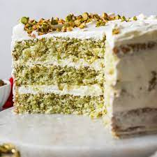

Pistachio Cake

Description
This pistachio cake is as easy as it is tasty. A delightful green Bundt cake made by enhancing a cake mix and pudding with homemade pistachio butter. It's topped with a sweet and creamy glaze for a delicious dessert.
Ingredients
- Unsalted pistachios or pistachio butter
- Cake mix
- Pistachio pudding mix
- Water
- eggs
- Vegetable oil
- Green food coloring
- Egg
Steps
- Make the pistachio butter
- Whisk the cake and pudding mixes together, then create a well in the middle
- Add the remaining cake ingredients to the well and whisk until combined
- Bake until the cake springs back when pressed and a toothpick comes out clean
- Make the glaze, then spoon it over the cooled cake. Garnish with chopped pistachios.